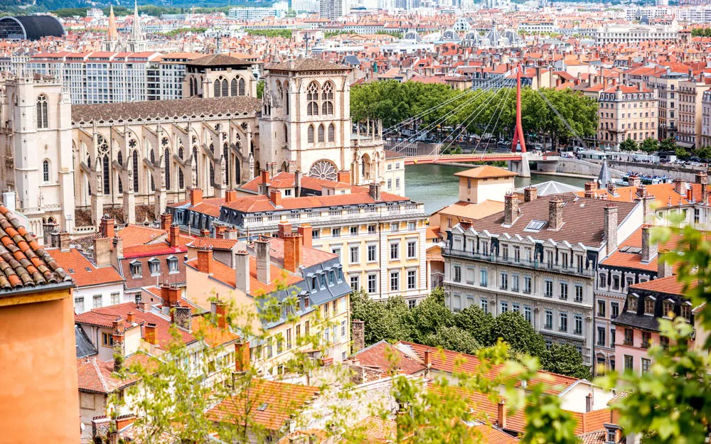

Lyon Tourisme
Lyon 1er (69001)
Lyon 2ème (69002)
Lyon 3ème (69003)
Lyon 4ème (69004)
Lyon 5ème (69005)
Lyon 6ème (69006)
Lyon 7ème (69007)
Lyon 8ème (69008)
Lyon 9ème (69009)
ACCUEIL
LA VILLE
LIEUX CULTURELS
BARS, CAFES ET RESTAURANTS
A PROPOS
La ville : bars, cafés et restaurants
Une liste de restaurants pour chaque arrondissement :